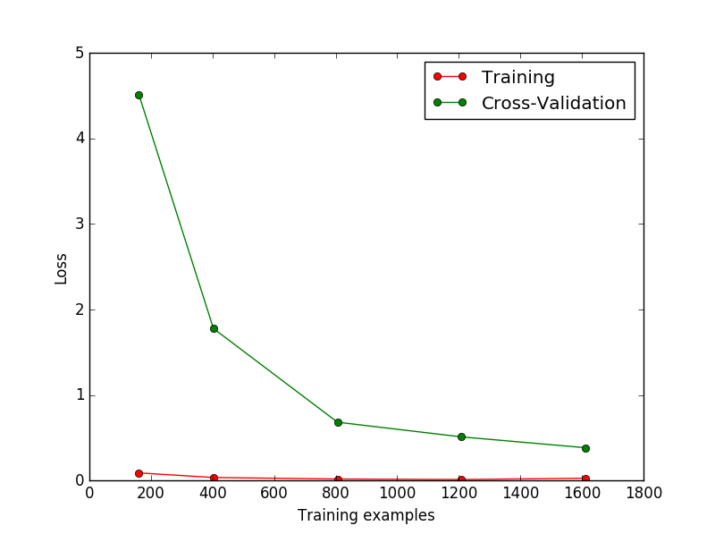
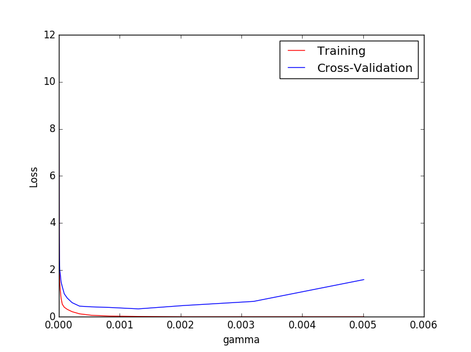
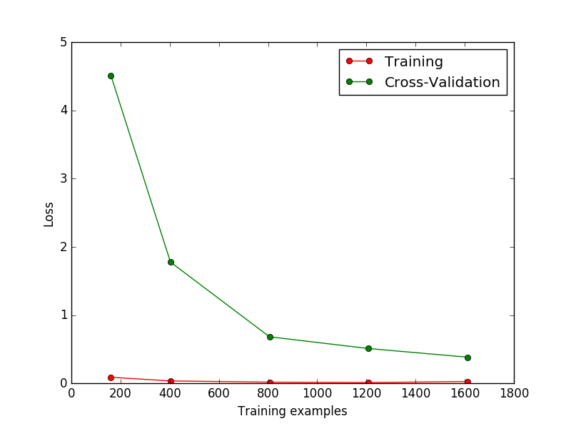
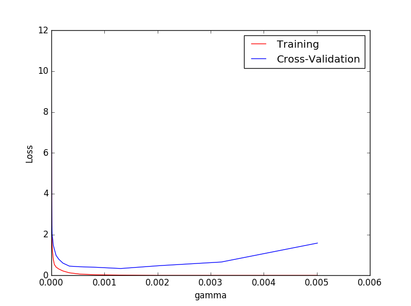

通过sklearn.learning_curve中的learning curve可以很直观的看出我们的model学习的进度， 从而对比返现有没有overfitting的问你。然后我可以对model进行调整来克服过拟合问题。
sklearn.learning_curve
learning curve
加载需要的模块
from sklearn.learning_curve import learning_curve from sklearn.datasets import load_digits from sklearn.svm import SVC import matplotlib.pyplot as plt import numpy as np
加载digits数据集，其包含的是手写体从0到9的数字。数据集总样本数为1797， 每个样本由64个特征组成，由对应的8*8像素表示，每个特征的取值为0~16。
digits = load_digits() X = digits.data y = digits.target
观察样本由小到大的学习曲线变化，采用K折交叉验证cv=10,选择平均方差检视模型效果scoring='mean_squared_error', 样本由小到大分为5轮检视学习曲线（10%，25%，50%，75%，100%）
cv=10
scoring='mean_squared_error'
（10%，25%，50%，75%，100%）
digits = load_digits() X = digits.data y = digits.target train_size, train_loss, test_lost = learning_curve( SVC(gamma=0.001), X, y, cv=10, scoring='mean_squared_error', train_sizes=[0.1,0.25,0.5,0.75,1] ) train_loss_mean = -np.mean(train_loss, axis=1) test_loss_mean = -np.mean(test_lost, axis=1)
数据可视化
plt.plot(train_size, train_loss_mean, 'o-', color='r', label='Training') plt.plot(train_size,test_loss_mean, 'o-', color='g', label='Cross-Validation') plt.xlabel('Training examples') plt.ylabel('Loss') plt.legend(loc='best') plt.show()

这次我们来验证SVC中的一个参数gamma在什么范围可以使model产生好的效果， 以及过拟合和gamma取值的关系。
rom sklearn.learning_curve import learning_curve from sklearn.learning_curve import validation_curve from sklearn.datasets import load_digits from sklearn.svm import SVC import matplotlib.pyplot as plt import numpy as np digits = load_digits() X = digits.data y = digits.target # plt.show() #取1.00000000e-06 ~ 5.01187234e-03 之间10个数字 param_range = np.logspace(-6, -2.3, 10) train_loss, test_loss = validation_curve( SVC(), X, y, param_name='gamma', param_range=param_range, cv=10, scoring='mean_squared_error' ) train_loss_mean = -np.mean(train_loss, axis=1) test_lost_mean = -np.mean(test_loss, axis=1) plt.plot(param_range, train_loss_mean, 'o-', color='r', label='Training') plt.plot(param_range, test_lost_mean, 'o-', color='b', label='Cross-Validation') plt.xlabel('gamma') plt.ylabel('Loss') plt.legend(loc='best') plt.show()

从图中可以看出当gamma值超过0.001之后交叉验证之后Loss开始增长，由此可见model进入了过拟合状态。
查看全部代码
交叉验证 Cross-validation（2）
通过
sklearn.learning_curve中的learning curve可以很直观的看出我们的model学习的进度， 从而对比返现有没有overfitting的问你。然后我可以对model进行调整来克服过拟合问题。1.学习曲线 learning curve
加载需要的模块
加载digits数据集，其包含的是手写体从0到9的数字。数据集总样本数为1797， 每个样本由64个特征组成，由对应的8*8像素表示，每个特征的取值为0~16。
观察样本由小到大的学习曲线变化，采用K折交叉验证
cv=10,选择平均方差检视模型效果scoring='mean_squared_error', 样本由小到大分为5轮检视学习曲线（10%，25%，50%，75%，100%）数据可视化

2. 验证曲线 validation curve
这次我们来验证SVC中的一个参数gamma在什么范围可以使model产生好的效果， 以及过拟合和gamma取值的关系。

从图中可以看出当gamma值超过0.001之后交叉验证之后Loss开始增长，由此可见model进入了过拟合状态。
查看全部代码